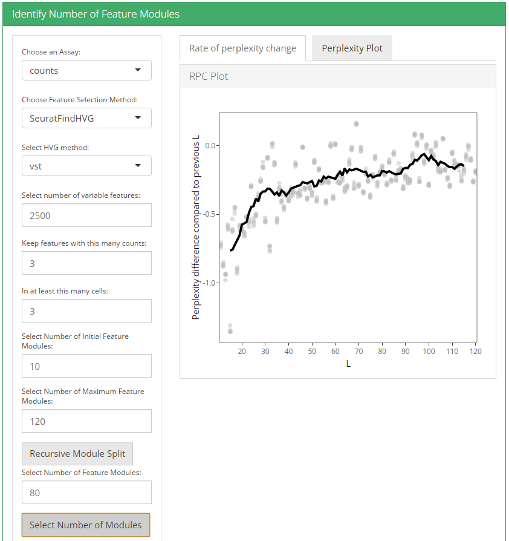
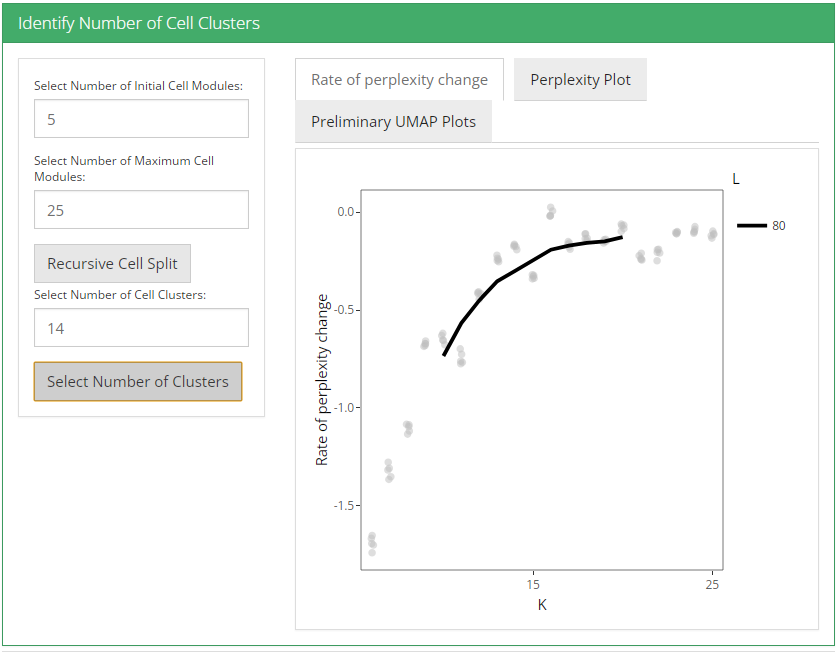
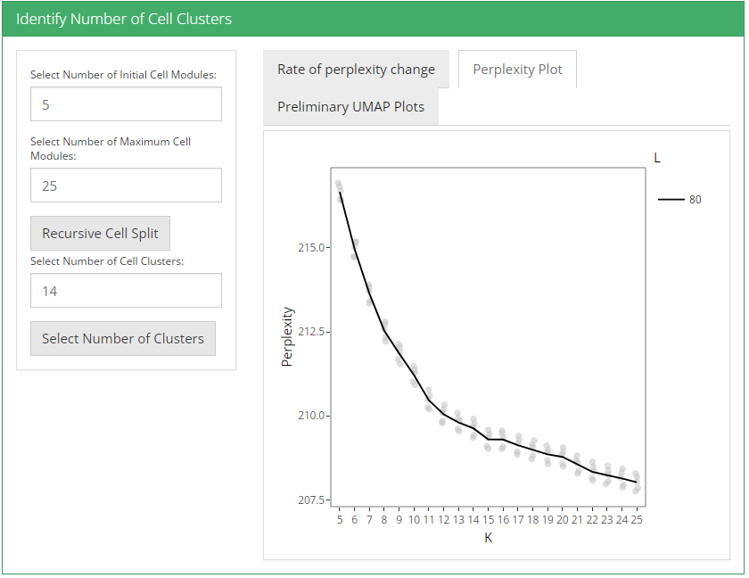
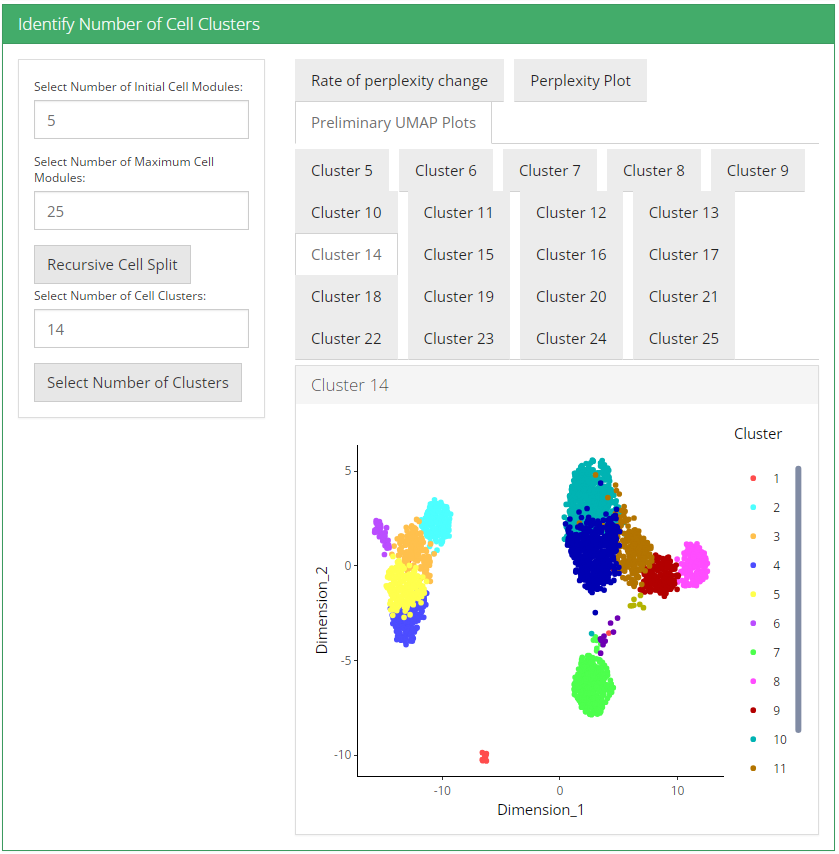
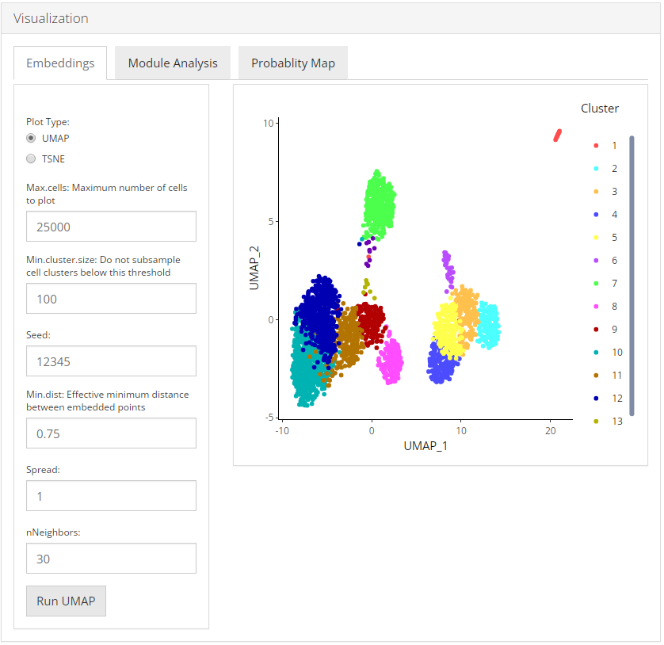
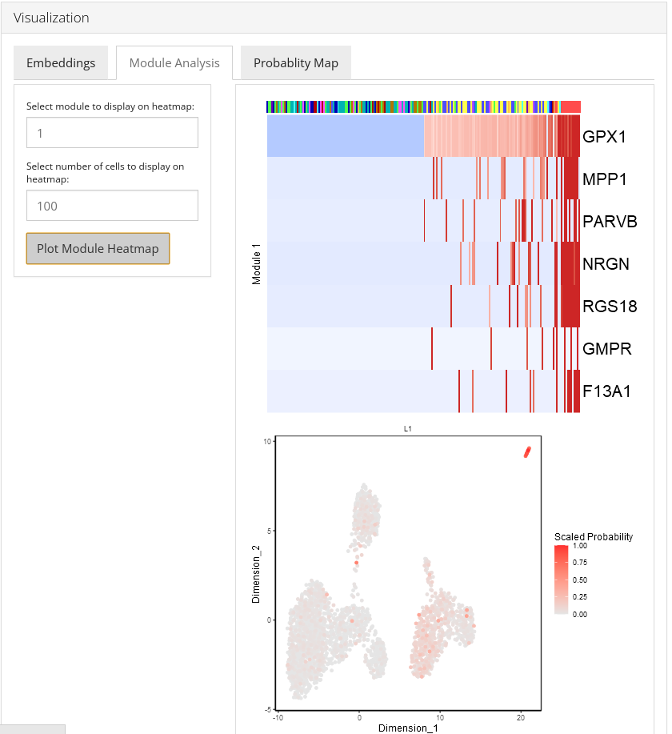
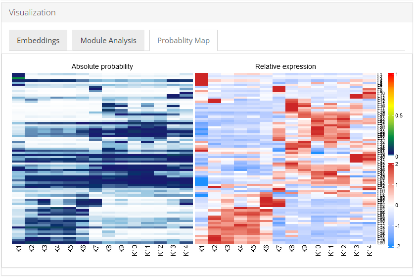
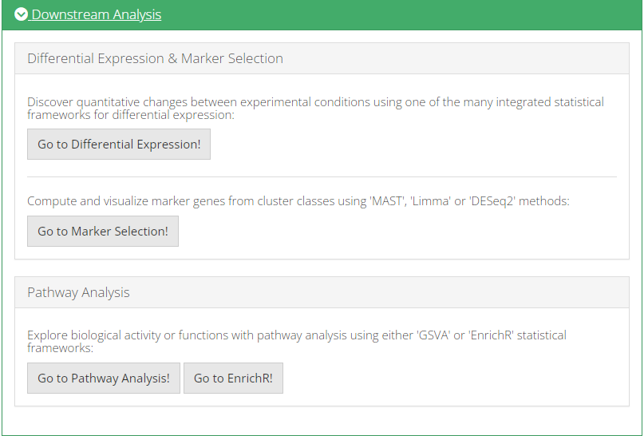

Celda Curated Workflow
Nida Pervaiz
Source:vignettes/articles/celda_curated_workflow.Rmd
celda_curated_workflow.RmdIntroduction
Celda is a Bayesian hierarchical model that can perform bi-clustering of features into modules and observations into subpopulations.
To view instructions on how to apply Celda to single-cell RNA sequencing (scRNA-seq) datasets, please select ‘Interactive Analysis’ for using Celda in shiny application or ‘Console Analysis’ for using this package on R console from the tabs below. The detailed tutorial of Celda can be found at Celda’s official website.
Workflow Guide
Entry of The Panel
In this tutorial example, we illustrate all the steps of the curated workflow and focus on the options available to manipulate and customize the steps of the workflow as per user requirements. From anywhere of the UI, the panel for celda can be accessed from the top navigation panel at the circled tab shown below by simply clicking on the ‘Curated Workflows’ from the top menu and then select Celda:

NOTE: This tutorial assumes that the data has already been uploaded via the upload tab of the toolkit and filtered before using the workflow.
Run Celda Analysis
1. Identify number of feature modules
To identify number of feature modules, there are always five essential inputs that users should be sure with:
- The data matrix to use - selection input “Choose an Assay”. In terms of celda analysis, SCTK always requires a full-sized feature expression data (i.e. assay) as a valid input.
- Feature selection method - selection input “Choose Feature Selection Method”. Select feature selection method from ‘None’ , ‘runSeuratFindHVG’ and ‘Scran_modelGeneVar.’
- Minimum number of counts required for feature selection - integer “Keep features with this many counts”.
- Minimum number of cells required for feature selection - integer “In at least this many cells”.
- Number of initial feature modules - integer “Select Number of Initial Feature Modules”.
- Number of maximum feature modules - integer “Select Number of Maximum Feature Modules”.

After the feature selection method is confirmed, the lower part will dynamically switch to the method specific settings.
runSeuratFindHVG
The method specific parameters for runSeuratFindHVG includes:
- Select method for computation of highly variable genes - selection input “Select HVG method”.
Seuratprovides three methods for variable genes identification i.e.vst(uses local polynomial regression to fit a relationship between log of variance and log of mean),mean.var.plot(uses mean and dispersion to divide features into bins) anddispersion(uses highest dispersion values only). - Select variable features - selection input “Select number of variable features”.Input the number of genes that should be identified as variable. Default is 2500.
Scran_modelGeneVar
The method specific parameters for Scran_modelGeneVar includes:
- Select variable features - selection input “Select number of variable features”.Input the number of genes that should be identified as variable. Default is 2500.
After feature selection method and it’s parameters are set, user can click recursive module split button to run recursiveSplitModule function which is used used to cluster features into modules for a range of feature modules (L). Two plots are shown when user runs recursive module split; perplexity plot and rate of perplexity change. To evaluate the performance of individual models we use perplexity plot by calculating the probability of observing expression counts given an estimated Celda model. The perplexity alone often does not show a clear elbow or “leveling off.” However, the rate of perplexity change (RPC) can be more informative.


2. Identify number of cell clusters
To identify number of cell clusters, there are always two essential inputs that users should be sure with:
- Number of initial cell modules - integer “Select Number of Initial Cell Modules”. Initial number of cell populations to try. Default 5.
- Number of maximum cell modules - integer “Select Number of Maximum Cell Modules”. Maximum number of cell populations to try. Default 25.

After these two parameters are set, user can click recursive cell split button to run recursiveSplitCell function to cluster cells into population for range of possible sub populations(K). Three plots are shown when user runs recursive cell split; perplexity plot, rate of perplexity change and preliminiary UMAP plot. To evaluate the performance of individual models we use perplexity plot by calculating the probability of observing expression counts given an estimated Celda model. The perplexity alone often does not show a clear elbow or “leveling off.” However, the rate of perplexity change (RPC) can be more informative.


UMAP plot is useful for visualizing the relationship between cells.

3. Visualization
After selecting a celda model with specific values of L and K, we can then perform additional exploratory and downstream analyses to understand the biology of the transcriptional modules and cell populations.
Embeddings
To visualize the relationships between the cells in a 2-D embedding we can generate a dimension reduction plot with the Uniform Manifold Approximation and Projection (UMAP) or a t-distributed stochastic neighbor embedding (t-SNE) method. User can select from UMAP and TSNE that which plot they want to visualize.

Module Analysis
The Module Analysis tab contains the probabilities and heatmaps for each module. Module probability plots will color cells by the probability of each module on a 2-D embedding plot. Module heatmaps show the relative expression for the features in a module across the cells. Cells within the heatmap will be ordered from the lowest to highest probability of the module. The parameter topCells can be used to control the number of cells included in the heatmap.

Probability Map
Celda has the ability to identify modules of co-expressed features and quantify the probability of these modules in each cell population. An overview of the relationships between modules and cell subpopulations can be explored with the function celdaProbabilityMap.The “Absolute probability” map gives insights into the absolute abundance of a module within a given cell subpopulation. The absolute heatmap can be used to explore which modules are higher than other modules within a cell population. The “Relative expression” map shows the standardized (z-scored) module probabilities across cell subpopulations. The relative heatmap can be used to explore which modules are relatively higher than other modules across cell populations.

4. Downstream Analysis
Once all steps of the celda workflow are completed, users can further analyze the data by directly going to the various downstream analysis options (Differential Expression, Marker Selection & Pathway Analysis) from within the celda workflow.

All methods provided by SCTK for Celda workflow use a SingleCellExperiment object both as an input and output. To demonstrate simple and clear examples, here we use the “PBMC-3k” dataset from “10X” which can be easily imported with SCTK functions.
library(singleCellTK)
sce <- importExampleData("pbmc3k")After the data has been uploaded, user may perform basic QC and filtering via QC & Filtering tab.
mito.genes <- grep("^MT-", rownames(sce), value = TRUE)
sce <- runCellQC(sce, sample = NULL, algorithms = c("QCMetrics", "scDblFinder", "decontX"), geneSetList = list(mito=mito.genes), geneSetListLocation = "rownames")
# Filter SCE
sce <- subsetSCECols(sce, colData = c("total > 600", "detected > 300"))
# See number of cells after filtering
ncol(sce)Finding number of modules
In general, removing features with low numbers of counts across all cells is recommended to reduce computational run time. A simple selection can be performed by removing features with a minimum number of counts in a minimum number of cells using the selectFeatures function. Other than this options such as runSeuratFindHVG and Scran_modelGeneVar also exist for feature selection.
library(celda)
useAssay <- "counts"
altExpName <- "featureSubset"
sce <- selectFeatures(sce, minCount = 3, minCell = 3, useAssay = useAssay, altExpName = altExpName)
# See number of features after filtering
nrow(altExp(sce, altExpName))
counts(altExp(sce)) <- as.matrix(counts(altExp(sce)))
moduleSplit <- recursiveSplitModule(sce, useAssay = useAssay, altExpName = altExpName, initialL = 10, maxL = 150)
#plots to decide value of L
plotGridSearchPerplexity(moduleSplit, altExpName = altExpName, sep = 10)
plotRPC(moduleSplit, altExpName = altExpName, sep = 10, n = 30)Using the plots visualization we can then decide the value for L i.e. the number of modules. The point at which RPC curve tends to level off can be taken as the best value for L.
Finding number of clusters
temp <- subsetCeldaList(moduleSplit, list(L = L))
sce <- recursiveSplitCell(sce, useAssay = useAssay, altExpName = altExpName, initialK = 3, maxK = 25, yInit = celdaModules(temp))
#plots to decide value of K
plotGridSearchPerplexity(sce)
plotRPC(sce)Using the plots visualization we can then decide the value for K i.e. the number of clusters. The point at which RPC curve tends to level off can be taken as the best value for K. The following code selects the final celda_CG model with L and K value chosen by the user.
sce <- subsetCeldaList(sce, list(L = L, K = K))Visualization
After selecting a celda model with specific values of L and K, we can then perform additional exploratory and downstream analyses to understand the biology of the transcriptional modules and cell populations. We can start by generating a dimension reduction plot with the Uniform Manifold Approximation and Projection (UMAP) method to visualize the relationships between the cells in a 2-D embedding. This can be done with function celdaUmap.Alternatively, a t-distributed stochastic neighbor embedding (t-SNE) can be generated using function celdaTsne. The UMAP and t-SNE plots generated by celdaUmap and celdaTsne are computed based on the module probabilities (analogous to using PCs from PCA). The calculated dimension reduction coordinates for the cells are stored under the reducedDim slot of the altExp slot in the original SCE object.
sce <- celdaUmap(sce, useAssay = useAssay, altExpName = altExpName)
sce <- celdaTsne(sce, useAssay = useAssay, altExpName = altExpName)The function plotDimReduceCluster can be used to plot the cluster labels for cell populations identified by celda on the UMAP.
plotDimReduceCluster(sce, reducedDimName = "celda_UMAP", labelClusters = TRUE)
plotDimReduceCluster(sce, reducedDimName = "celda_tSNE", labelClusters = TRUE)The function moduleHeatmap can be used to view the expression of features across cells for a specific module. The featureModule parameter denotes the module(s) to be displayed. Cells are ordered from those with the lowest probability of the module on the left to the highest probability on the right. Similarly, features are ordered from those with the highest probability within the module on the top to the lowest probability on the bottom.
moduleHeatmap(sce, featureModule = 27, useAssay = useAssay, altExpName = altExpName)The function plotDimReduceModule can be used visualize the probabilities of a particular module or sets of modules on a reduced dimensional plot such as a UMAP. This can be another quick method to see how modules are expressed across various cells in 2-D space.
plotDimReduceModule(sce, modules = 27, useAssay = useAssay, altExpName = altExpName, reducedDimName = "celda_UMAP")Celda has the ability to identify modules of co-expressed features and quantify the probability of these modules in each cell population. An overview of the relationships between modules and cell subpopulations can be explored with the function celdaProbabilityMap.The “Absolute probability” map gives insights into the absolute abundance of a module within a given cell subpopulation. The absolute heatmap can be used to explore which modules are higher than other modules within a cell population. The “Relative expression” map shows the standardized (z-scored) module probabilities across cell subpopulations. The relative heatmap can be used to explore which modules are relatively higher than other modules across cell populations.
celdaProbabilityMap(sce, useAssay = useAssay, altExpName = altExpName)